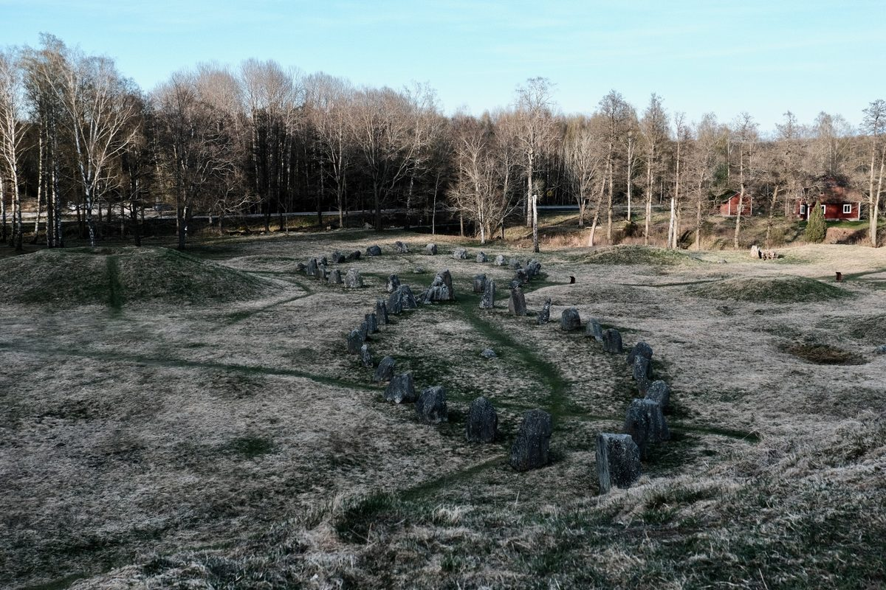
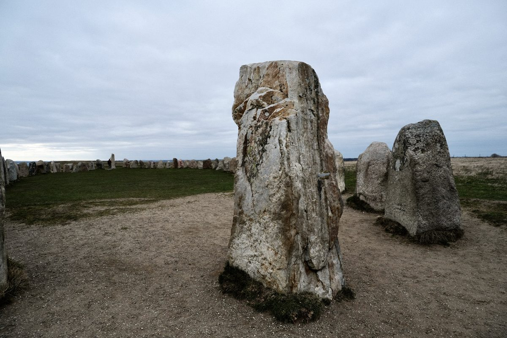

Ales Stenar Under a Grey Sky
At Ales Stenar, standing stones form a quiet ship-shaped monument above the coast, held between open ground and a heavy Nordic sky.
From the story: Ales Stenar
Same collection
Related photographs

A stone ship at Anundshög, standing quietly among burial mounds and open fields near Västerås.

The Anundshög Runestone, Vs 13, bears the inscription: “Folkvid raised all these stones in memory of his son Heden, Anund’s brother. Vred carved the runes.”

A single standing stone anchors the view at Ales Stenar, surrounded by the wider stone ship and the muted openness of the Skåne coast.